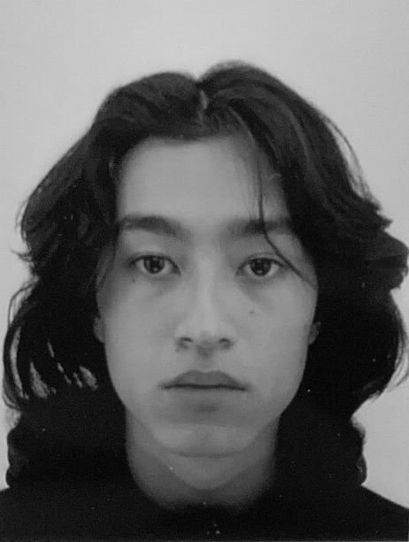

My CV
My name is Loan RIYANTO, I'm currently at Velizy's IUT, studying for a BA in MMI. I've chosen this formation because I'm gaining interest in development. I always liked to create, especially on softwares, and I've always been on computers

Education
I’m currently at my first year of BUT MMI (Multimedia) at the Velizy’s IUT (Institute of technology). We are studying different subjects such as communication, web development, English, graphism and cinema. All these subjects are linked since we need to be versatile. We will specialize in year 2 either in Web Development or in Graphism, and I'm going to chose graphism. Communication might be useful if I want to do advertising for my website, English if I want my website to be in French and English, graphism if I need to add any logos etc...
During middle school, I was in Sainte Marie’s school, Antony. I then moved to Sophie Barart’s high school, Verrières-le-buisson where I chose STMG department. This summer, I’ve attempted the 42 coding school. I learned a lot from this 1 month-period exam.
Professionnal experience
I haven't worked yet. In year 10, I did my internship at the local post office, during these 5 days, I learnt on how the packages were sorted and distributed all around the city.
My passions
I'm currently going to the gym, and i'd like to practice muay thai very soon. Beside that, I also love music (rap and electronic music) and movies. I'm at an average of 3 movies per week and I'm gaining more and more interest for it. Finally, I do some video editing and 3d editing. You can see my work right here.